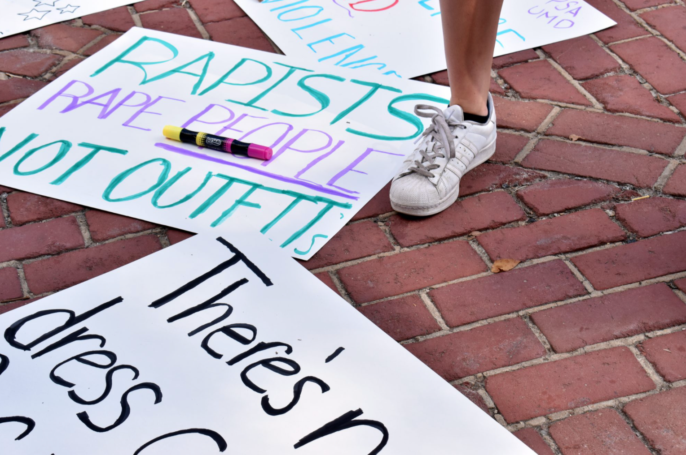

Trigger warning: This article contains content dealing with the topic of sexual assault.
A University of Maryland student stands among posters at Preventing Sexual Assault's annual Slut Walk on Oct. 4, 2019. (Rachel Hunt/For The Diamondback)
For this April's sexual assault awareness month, University of Maryland organizations such as CARE and PSA held virtual events that emphasized inclusivity and healing for victims.
Campus Advocates Respond and Educate to Stop Violence and Preventing Sexual Assault are the campus' resources for students who are allies of or victims of sexual assault. Both organizations held events to bolster understanding about sexual assault throughout April.
Located in the University Health Center, CARE is the prevention and response entity for power-based violence issues. It has a confidential crisis hotline and offers free therapy and advocacy services to primary and secondary survivors of sexual violence, stalking, sexual harassment or any type of unwanted or nonconsensual experiences.
During April, CARE hosted a number of events, including Take Back the Night and the Clothesline Project, to recognize the survivors and supporters of sexual and relationship violence.
Grace Fansler Boudreau, the CARE coordinator for outreach and assessment, said despite the pandemic, CARE still has plenty of resources for students.
"They can help folks understand options, we can also provide through the CARE office limited academic and financial support," Boudreau said. "As well as help folks get connected to medical, behavior and mental health services."
Take Back the Night, one of CARE's biggest events for sexual assault awareness month, has taken place since the 1970s. The event featured a panel about sexual assault and the media, followed by craft activities. This event allowed the community to come together to share their stories and experiences.
"The reason we do those things is to uplift the voices of survivors," Boudreau said.
"In our work, we want to center the voices of survivors since that is who we do this work for and by making a culture that believes survivors."
PSA also focused on uplifting survivors and providing resources about sexual assault for students throughout its weeklong virtual Occupy McKeldin.
Occupy McKeldin, which is usually a one-day in-person event, consisted of a variety of virtual panels featuring different speakers and topics.
One event featured Alisa Zipursky, a writer who documented her journey grappling with childhood sexual abuse on her website Healing Honesty. Zipursky had students who joined the event journal and discussed how writing can impact a sexual assault victim's healing process.
"I would love people to know that the trauma we experience extends far beyond the initial experiences of violence and that being a survivor and healing is complicated and specific to each of us," Zipursky said.
Lizzie Mafrici, the president of PSA, emphasized the importance of engaging the whole community in conversations of sexual assault. PSA partnered with the Black Student Union, Black Terps Matter and a variety of fraternity and sorority organizations, Mafrici said.
Both CARE and PSA emphasize the importance of supporting victims of sexual assault and increasing education about the subject.
"We are available to the entire UMD community, and if someone is not sure about how to navigate a situation that is exactly what we are here for,” Boudreau said. "We are here to help people look at what all of their options are, what all of their resources are and to support them in making their own decisions."